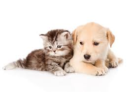

Em 1857, o escritor britânico George Eliot escreveu que os animais são amigos muito agradáveis, não fazem perguntas, nem manifestam desaprovação. Esse é o caráter comum dos animais de estimação. Apesar de soar esnobe a descrição, o que o autor quis dizer é que os animais de estimação são leais e gostam de fazer companhia ao dono.
O famoso ‘até que a morte nos separe’ pode até ser falho nas relações humanas, mas pode apostar que com os animais de estimação a situação muda. Eles serão leais a você sempre.
É indiscutível que animais, não somente os cães, são os melhores amigos do homem. Porém, claro, como tudo na vida, é importante dosar. Utilizar um animalzinho de estimação como substituto de uma família ou amigos não é saudável, por isso é essencial ressaltar a importância da companhia dos animais como uma parte da vida, mas sempre com um cuidado responsável com os animais.
Veja alguns dos vários benefícios que ter um pet traz para os humanos:
Muitos desses fatores estão diretamente relacionados com o fato do ser humano precisar de carinho e atenção, mas normalmente as relações não satisfazem as nossas necessidades de maneira apropriada, por isso o organismo reage tão bem ao simples ato de fazer carinho em um bichinho. Além do lado bom para os humanos, devemos pensar no bem-estar do animal. Lembre-se que os gatos e cachorros foram domesticados por homens há muitos séculos e por isso criaram um vínculo com as pessoas, sendo dependentes delas e merecendo cuidados especiais.
Como escolher o pet ideal?

A variedade de animais que podem virar um pet é grande e mesmo quando temos preferência por um tipo específico, ainda podemos ficar em dúvida quanto à raça. Vários fatores são essenciais na hora da escolha: gastos, tempo, espaço, acordo entre os membros da família, entre outros. Algumas dicas podem facilitar essa escolha: